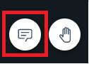

Chatting with meeting participants
By default, the chat feature is enabled. You can communicate with all meeting participants using the chat function. Guest users can only access the chat room through the active meeting.
About this task
The feature is collapsed by default and can be expanded at any time to interact with other participants.

In addition to the chat box in the meeting room, authenticated users can access the chat by
using the following clients.
- Sametime standalone client
- Sametime embedded client
- Sametime mobile app
- Sametime web proxy client
Due to the persistent chat feature, chat information can be checked later. Contact your server administrator for the details.
Meeting recording notifications are also communicated in the active chat session.